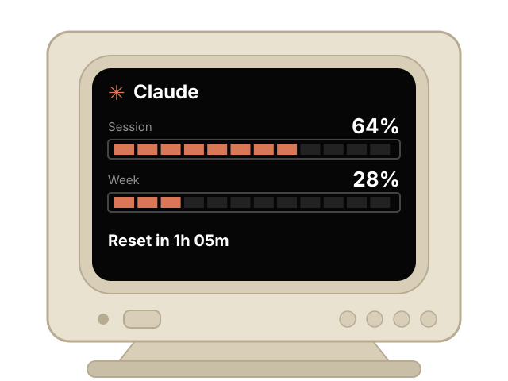

Claude Usage Monitor Lite
The budget version without a battery: a tiny 90s-style desk monitor. It shows your Claude limits: session, week and when they reset.

With battery? There is also the more expensive version with a built-in battery (about €35). Go to the battery version
Buy the part
One board with display, about €16. Plus a USB cable with data lines and a 5 V charger. No battery here; for mobile use plug in a power bank.
Print the case
Three parts, one colour, PLA, 0.2 mm, 15 %, no supports. Which side? Test the software first: if the picture is upside down, take the other.
Install the software
Connect the board to your computer by USB (cable with data lines) and click the button in Chrome or Edge. The display appears in the language you chose.
Device not found? Install the CH340 or CP210x driver, then hold BOOT, tap RST, release BOOT.
Assemble
- Insert the board from the back, display toward the front window.
- Plug the cable in from the side, push the lid on.
- Put it on the stand.
Connect to Claude
- Install Claude Code once:
irm https://claude.ai/install.ps1 | iex - Run the setup script, log in, choose "device".
- Pick the Wi-Fi UsageMonitor-Setup, enter your Wi-Fi and the token.
Operation
| Power | plug in USB = on, unplug = off |
| Tap | tap the screen briefly = refresh |
| Hold 10 s | hold the screen 10 s = reset everything |
What is what? The files explained
| stl/ | The print files. You need these for printing. |
| setup/ | Windows script that gets the Claude access. Once per device. |
| widget/ | Bonus for the iPhone. |
| firmware/ | Source code of the device software. Built automatically and installed here with one click. |
| enclosure/ | Blueprint of the case. Only to modify. |
| .github/ | GitHub build automation. Nothing to do. |
Testers wanted: The device software is written and the case dimensions come from datasheets. Neither has been tested on real hardware yet. If you build it earlier, please share your experience in Issues.